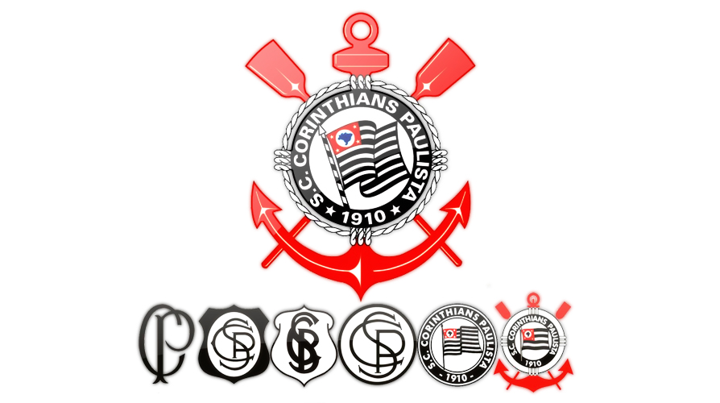

Sport Club Corinthians Paulista é um clube poliesportivo brasileiro da cidade de São Paulo, capital do estado de São Paulo. Foi fundado como uma equipe de futebol no dia 1 de setembro de 1910 por um grupo de operários do bairro Bom Retiro. Seu nome foi inspirado no Corinthian FC de Londres, que excursionava pelo Brasil. Embora tenha atuado em outras modalidades esportivas ao longo dos anos, seu reconhecimento e suas principais conquistas foram alcançados no futebol. O clube é um dos mais bem sucedidos do Brasil e das Américas nos últimos anos.
Sendo o terceiro maior campeão nacional, com onze conquistas, ficando atrás somente do Palmeiras e Flamengo. Tendo conquistado dois Mundiais de Clubes da FIFA, uma Copa Libertadores da América de forma invicta, uma Recopa Sul-Americana, sete Campeonatos Brasileiros, três Copas do Brasil, uma Supercopa do Brasil, cinco Torneios Rio-São Paulo (recordista, ao lado de Palmeiras e Santos), duas Taça dos Campeões Estaduais Rio–São Paulo, 30 Campeonatos Paulistas (atual recordista) e uma Copa Bandeirantes (único vencedor). Possui o maior número de conquistas do Campeonato Brasileiro considerando a partir de 1971 (quando foi adotado o nome de Campeonato Nacional de Clubes), com 7 títulos (empatado com o Flamengo).
Salve o Corinthians
O campeão dos campeões
Eternamente
Dentro dos nosso corações
Salve o Corinthians
De tradições e glórias mil
Tu és orgulho
Dos desportistas do Brasil
Teu passado é uma bandeira
Teu presente é uma lição
Figuras entre os primeiros do nosso esporte bretão
Corinthians Grande
Sempre Altaneiro
És do Brasil
O clube mais brasileiro
Salve o Corinthians
O campeão dos campeões
Eternamente
Dentro dos nosso corações
Salve o Corinthians
De tradições e glórias mil
Tu és orgulho
Dos desportistas do